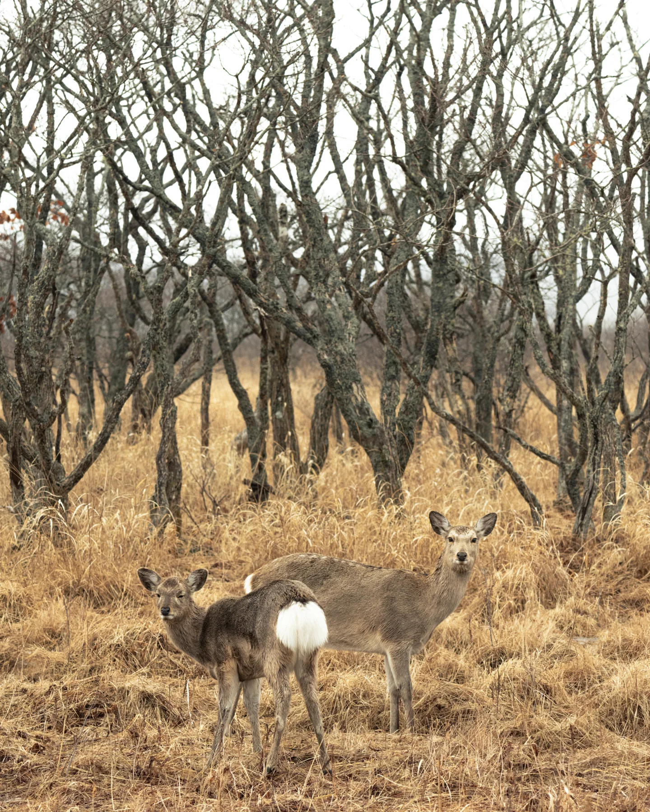

提供中 · v2.2.0
WildCatcher
AI wildlife analysis
大量の画像・動画から、確認したい記録へ。
カメラトラップの映像から動物・人・車両を検出。PC上で解析し、結果の確認・ラベル修正・データ出力までを一つのアプリで進められます。
WildCatcherを見るReCorta · Field science & technology
野生動物の映像解析から、環境アセスメントの記録・報告まで。調査に向き合う人のためのソフトウェアを届けます。
合同会社ReCorta · 東京都西東京市

Our products
撮影データの確認と、プロジェクト全体の記録管理。現場の課題に合わせた二つの製品に取り組んでいます。
AI wildlife analysis
カメラトラップの映像から動物・人・車両を検出。PC上で解析し、結果の確認・ラベル修正・データ出力までを一つのアプリで進められます。
WildCatcherを見るEIA toolkit
環境アセスメントの工程、観察・測定、根拠資料、レビュー、意見対応をまとめる業務ワークスペース。編集可能なWord報告書につながる記録の流れを開発しています。
開発中の取り組みを見るOur approach
繰り返す確認や転記を整理し、調査の解釈と意思決定に時間を使える環境を目指します。
AIの出力を人が確認できること、記録と根拠資料をたどれることを大切にしています。
調査会社、研究機関、自治体などの業務を想定し、利用環境や現場の声をもとに製品を改善します。
Company news
更新処理・解析再開・結果確認を改善。Windowsと2種類のMac向けに配布しています。
東京都西東京市を本店所在地として、設立登記を申請しました。
製品の導入、評価利用、開発中のWildpassについてご相談ください。